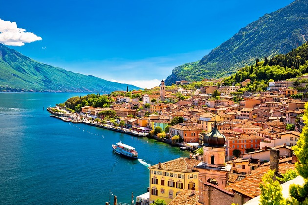
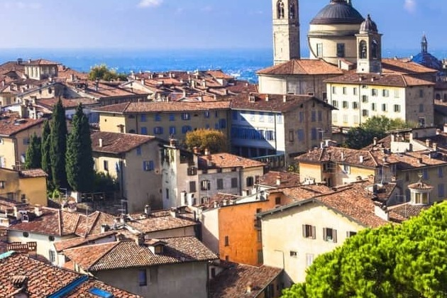

"Call Me by Your Name," both a novel by André Aciman and a 2017 film directed by Luca Guadagnino, unfolds against the sun-soaked backdrop of 1980s Italy. The story centers on the evolving relationship between 17-year-old Elio Perlman and Oliver, a 24-year-old graduate student who stays with Elio's family over the summer. What begins as initial wariness and curiosity between the two soon blossoms into a passionate romance, as they navigate the complexities of desire, intimacy, and self-discovery amidst the lush Italian countryside. The narrative delves deeply into Elio's introspective journey, exploring themes of identity, longing, and the transient nature of youthful love with poignant sensitivity.
Acclaimed for its evocative prose and heartfelt portrayal of first love, "Call Me by Your Name" captures the intensity and tenderness of a fleeting summer romance, resonating with audiences for its emotional depth and unforgettable characters. The film adaptation, praised for its visual beauty and powerful performances by Timothée Chalamet and Armie Hammer, faithfully translates the novel's themes of desire and self-discovery onto the screen, further cementing its status as a modern classic exploring the complexities of human connection.
"Call Me by Your Name" is set in the summer of 1983 in northern Italy and revolves around the relationship between Elio Perlman, a precocious 17-year-old boy, and Oliver, a 24-year-old American graduate student who comes to stay with Elio's family. Initially, Elio is intrigued but also conflicted by his attraction to Oliver, who is staying at their villa to assist Elio's father, a professor. As the summer progresses, Elio and Oliver grow closer, exploring their desires and developing a deep emotional and physical connection. Their relationship unfolds against the backdrop of the Italian countryside, characterized by its beauty and languid pace.
The plot follows their evolving romance, marked by moments of passion, intimacy, and self-discovery for both characters. The narrative is introspective, focusing on Elio's journey of coming to terms with his sexuality and navigating his feelings for Oliver. The story culminates in a tender and bittersweet exploration of first love, as the characters confront the transient nature of their relationship and the complexities of desire.
The film adaptation of "Call Me by Your Name," directed by Luca Guadagnino, is celebrated for its stunning visual and cinematographic portrayal of 1980s northern Italy. The cinematography, overseen by Sayombhu Mukdeeprom, captures the lush landscapes, vibrant colors, and intimate settings that immerse viewers in the story's emotional depth. From the sunlit orchards and serene lakes to the rustic elegance of the Perlman family villa, each scene is meticulously framed to evoke a sense of nostalgia and romance. The film's visual storytelling enhances the narrative's themes of desire, intimacy, and self-discovery, complementing the heartfelt performances of Timothée Chalamet as Elio and Armie Hammer as Oliver. The camera work skillfully conveys the characters' inner turmoil and burgeoning affection, creating a sensory experience that resonates long after the credits roll, making "Call Me by Your Name" a masterclass in evocative cinematography.
"Call Me by Your Name," set against the sun-drenched beauty of 1980s northern Italy, intricately explores the themes of love, desire, and self-discovery through the tender yet tumultuous relationship between Elio Perlman and Oliver. André Aciman's narrative delves into Elio's introspective journey as he navigates his burgeoning attraction to Oliver, a 24-year-old American scholar staying with his family. The novel portrays the fluidity of desire and the complexities of sexual awakening with exquisite sensitivity, capturing the nuances of intimacy and vulnerability in their evolving romance. Against the backdrop of Elio's family villa and the serene Italian countryside, the novel immerses readers in a sensory experience that underscores the transformative power of first love and its profound impact on personal identity.
Beyond its exploration of romantic love, "Call Me by Your Name" also delves into themes of memory and nostalgia. It portrays youth as a fleeting, ephemeral period marked by intense emotions and formative experiences, tinged with the longing for lost moments and the inevitability of change. Aciman's evocative prose and vivid imagery create a narrative that resonates long after the final page, inviting readers to reflect on the enduring significance of intimate connections and the poignant beauty found in fleeting encounters.
The film "Call Me by Your Name," directed by Luca Guadagnino, was primarily filmed on location in northern Italy, capturing the picturesque landscapes that serve as a crucial backdrop to the story's emotional depth. The principal filming locations include:
Crema, Lombardy: This small town in Lombardy, Italy, serves as the primary setting for the fictional town where the Perlman family resides. Many pivotal scenes, including those at the Perlman family villa and around the town square, were filmed here.
Lake Garda, Lombardy:The largest lake in Italy, Lake Garda's stunning vistas and tranquil waters are featured in various scenes, including the swimming and boating sequences that highlight the characters' leisurely summer activities.
Bergamo, Lombardy: The historic city of Bergamo, with its charming streets and medieval architecture, provides the backdrop for several scenes, including those featuring the Bergamo Cathedral.
"Call Me by Your Name" concludes with a poignant exploration of love, loss, and the passage of time. As Elio reflects on his summer romance with Oliver, the novel delves into themes of longing and nostalgia, capturing the bittersweet essence of their fleeting relationship. The closing chapters resonate with Elio's introspective journey, as he grapples with the profound impact of first love on his sense of identity and understanding of desire.
André Aciman's lyrical prose evokes a sense of melancholy and yearning, inviting readers to contemplate the enduring significance of intimate connections and the transient beauty of youth. Ultimately, the novel leaves a lasting impression as it beautifully portrays the complexities of human emotion and the universal experience of longing for what could have been.